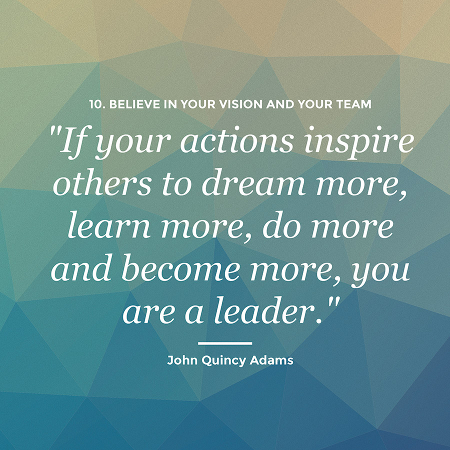

To me, leadership means being a role model to others showing inspiration and guiding others in the right direction. A leader steps up in times of crisis, and is able to think and act creatively in difficult situations. Unlike management, leadership cannot be taught, although it may be learned and enhanced through coaching or mentoring.
To me teamwork means, working together as a group,letting everyone put in their input and work as a team. The process of working collaboratively with a group of people in order to achieve a goal